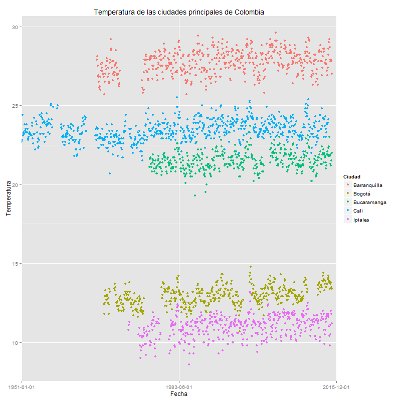

Se sabe por informacion previa que existen ciclos con respecto a la temperatura de diferentes ciudades, los cuales se ven reflejados cuando la serie de tiempo es estaacionaria o ciclica. Cuando es ciclica se puede decir que existen estacion mientras que si es estacionaria se comporta de manera muy similar en todos los periodos del tiempo evaluado.
En este caso, se realiza una primera aproximacion con respecto a la serie de tiempo para la temperatura de las ciudades de Bogota, Barranquilla, Cali, Ipiales y Bucaramanga de los ultimos 65 yr aproximadamente. Lo que se obtiene se ve reflejado en la siguiente grafica:
Se observa que el rango de variacion de cada una de las temperaturas no es muy grande por lo cual se puede establecer que la varianza de los datos no es muy alta y por tal motivo a la hora de realizar una regresion se podria esperar que el R-cuadrado oscile entre 0,6 y 0,8
Como el numero de observaciones para cada ciudad excede el numero de observaciones maximas para una chi-cuadrada (32 obs.) se realiza una prueba F. Esta genera relevancia global de cada uno de los modelos planteados para cada serie de tiempo (ciudad)
Ahora bien, basandose en la grafica de Temperatura Anual se establece que de las cinco ciudades evaluadas Barranquilla es la que presenta una temperatura mas alta, seguida por Cali y Bucaramanga. El registro de la temperatura para la ciudad de Cali es mas amplio por lo cual genera un mayor nivel de confiabilidad.
Con respecto a evaluar si el calentamiento global afecto la temperatura de las cinco ciudades de Colombia que fueron evaluadas en este estudio, se puede decir que no hay suficiente informacion para establecer si el cambio se debe o no a esto. Se observa que los periodos evaluados sufren ciclos de aumento y disminucion de temperatura, pero esto se puede deber a fenomenos climaticos que son no se pueden predecir con exactitud, siendo asi variables no observables que podrian causar endogeneidad en el modelo de la serie de tiempo y por lo tanto causarian un sesgo que sobre-estima o sub-estima la temperatura que se interpolo.
Para concluir se puede decir que el calentamiento global, si bien es acelerado por el ser humano, se puede deber a que la tierra sufre procesos ciclicos que no son controlados por ningun metodo cuantificable. Las ciudades presentan un rango acorde a la zona en la que se encuentran (piso termico) y con el pasar de los años la temperatura no parece haber aumentado de manera exponencial (aumento del calentamiento global) si no que mas bien parece llevar un comportamiento estacionario